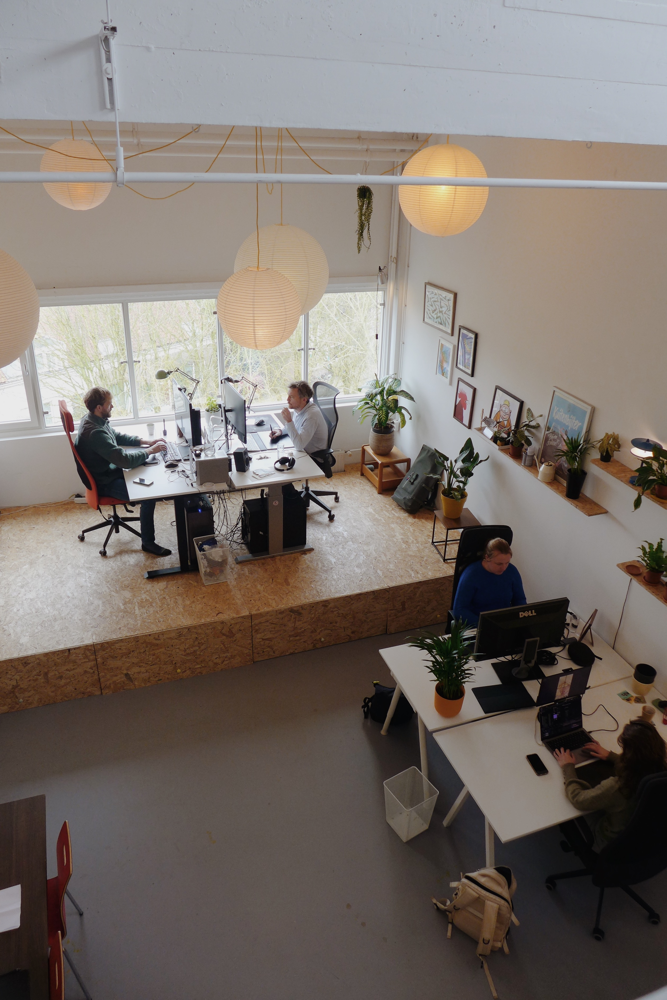
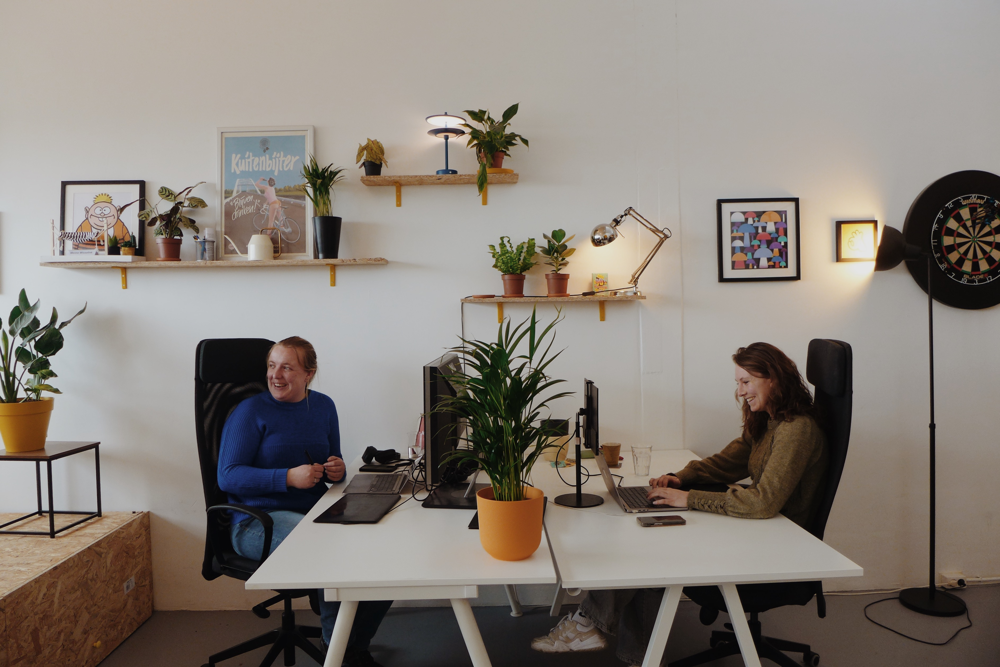
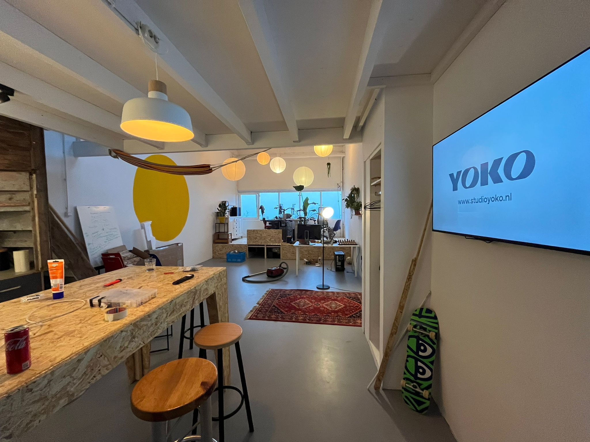

About
We houden van werk dat ergens over gaat.
Ideeën die iets uitleggen. Verhalen die blijven hangen.
We maken ze helder in beeld —
en bouwen het zo dat het blijft werken.
Niet als losse productie,
maar als iets dat klopt, groeit en herhaald kan worden.

